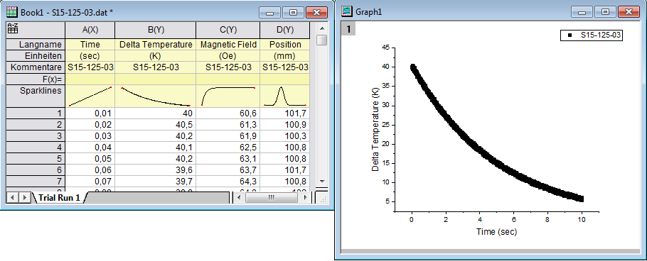
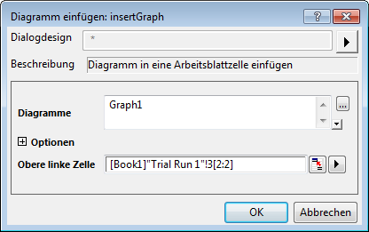
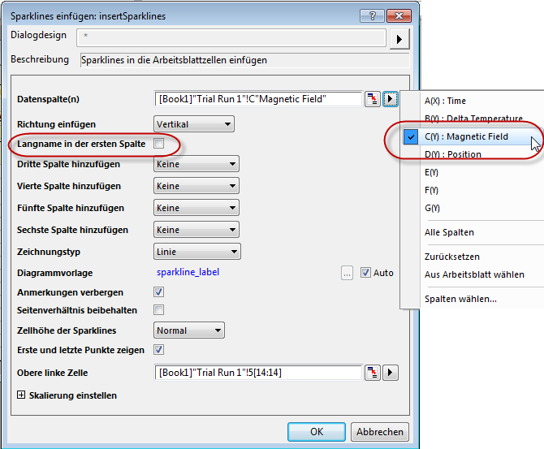
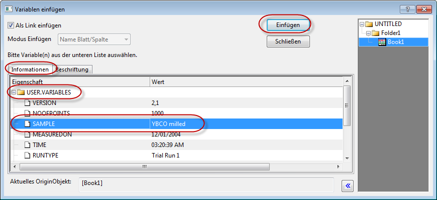
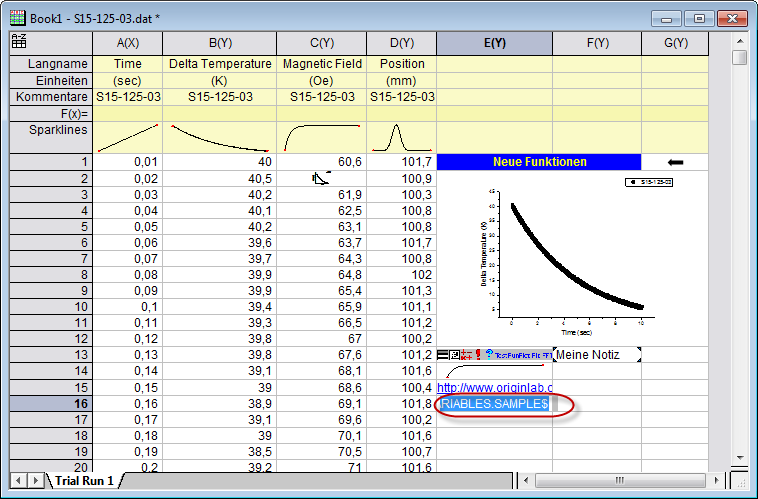
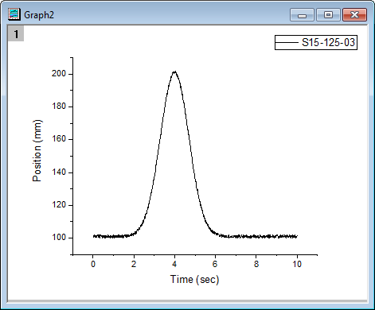
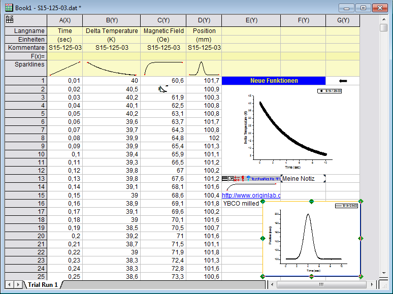

Objekte zu Arbeitsblatt hinzufügen
Zusammenfassung
Sowohl Spaltenkopfzeilen als auch Datenzellen können eingebettete Objekte, verknüpfte Objekte sowie formatierten Text enthalten. Außerdem können Sie frei bewegliche Diagramme in ein Arbeitsblatt wie Excel einfügen.
Hinweis: Ab Origin 2018 wird jedes eingefügte Diagramm eine Popup-Vorschau erzeugen, wenn Sie mit dem Cursor darüber fahren, sei es ein bearbeitbares Diagramm, ein Diagramm, das als verknüpftes oder statisches Bild eingefügt wurde, ein aus einer Datei eingefügtes Bild oder eine Sparkline.
Was Sie lernen werden
- Verschiedene Objekte in eine Arbeitsblattzelle einfügen
- Ein frei bewegliches Diagramm zu einem Arbeitsblatt hinzufügen
Schritte
Objekte in Zellen einfügen
- Öffnen Sie ein neues Projekt, indem Sie auf die Schaltfläche Neues Projekt klicken
 .
.
- Klicken Sie auf die Schaltfläche Importassistent. Navigieren Sie auf der Seite Importassistent - Quelle zum Origin-Ordner Sample\Import and Export und wählen Sie die Datei S15-125-03.dat . Klicken Sie auf die Schaltfläche Fertigstellen, um die Datei zu importieren.
- Markieren Sie die Spalten A(X) und B(Y), wählen Sie Zeichnen: Symbol: Punktdiagramm im Menü oder klicken Sie auf die Schaltfläche Punktdiagramm
 , um ein Diagramm zu erstellen.
, um ein Diagramm zu erstellen.

- Kehren Sie zur Arbeitsmappe zurück und wählen Sie Spalte: Spalten hinzufügen im Menü oder klicken Sie auf die Schaltfläche Neue Spalten anhängen
 , um 3 Spalten hinzuzufügen.
, um 3 Spalten hinzuzufügen.
- Erweitern Sie die Arbeitsmappe, so dass Sie alle 7 Spalten sehen können.
- Geben Sie in Zeile 1 von E(Y) Neue Funktionen ein und drücken Sie Enter.
- Markieren Sie Zelle E1 und klicken Sie dann auf die Schaltfläche Fett
 auf der Symbolleiste Format.
auf der Symbolleiste Format.
- Klicken Sie auf die Schaltfläche Schriftfarbe
 auf der Symbolleiste Format und wählen Sie Gelb aus.
auf der Symbolleiste Format und wählen Sie Gelb aus.
- Klicken Sie auf die Schaltfläche Füllfarbe
 auf der Symbolleiste Stil und wählen Sie Blau aus.
auf der Symbolleiste Stil und wählen Sie Blau aus.
- Markieren Sie den Bereich E1 bis F1 und klicken Sie auf die Schaltfläche Zellen zusammenfügen
 .
.
- Klicken Sie mit der rechten Maustaste auf die Zelle G1 und wählen Sie Pfeil einfügen: Links im Kontextmenü, um einen Pfeil in der Zelle einzufügen.
- Markieren Sie den Bereich E2 bis G12 und klicken Sie auf die Schaltfläche Zellen zusammenfügen .
- Klicken Sie mit der rechten Maustaste auf Zelle E2 und wählen Sie Diagramm einfügen.
- Geben Sie im Dialog Diagramme einfügen den Text Graph1 im großen Feld Diagramme ein oder klicken Sie auf die Schaltfläche Durchsuchen , um Graph1 auszuwählen.

- Klicken Sie auf OK, um den Dialog zu schließen.
- Klicken Sie mit der rechten Maustaste auf E13, um Bilder aus Dateien einfügen im Kontextmenü zu wählen.
- Klicken Sie auf die Schaltfläche Durchsuchen und ändern Sie den Dateityp in Bitmap (*.bmp).
- Wählen Sie im Origin-Anwenderdateiordner die Datei Userdef.BMP, klicken Sie auf Hinzufügen und dann auf OK.
- Klicken Sie auf OK, um den Dialog Bilder aus Dateien einfügen zu schließen.
- Klicken Sie mit der rechten Maustaste auf Zelle F13 und wählen Sie Notizen einfügen.
- Klicken Sie doppelt auf Zelle F13. Modifizieren Sie den Text und schließen Sie das Notizfenster. Es wird ein Hinweis in der Zelle gespeichert.
- Klicken Sie mit der rechten Maustaste in E14 und wählen Sparklines einfügen, um den Dialog Sparklines einfügen zu öffnen.
- Klicken Sie im Ausklappmenü auf die Option Datenspalten, um C(Y) zu wählen. Deaktivieren Sie das Kontrollkästchen Langname in der ersten Spalte.

- Klicken Sie auf OK, um den Dialog zu schließen. In der Zelle wird eine Sparkline angezeigt.
- Klicken Sie auf Zelle E15, geben Sie: http://www.originlab.com ein und drücken Sie Enter.
- Klicken Sie auf den Text in Zelle E15. Ihr Webbrowser ruft die OriginLab-Webseite auf.
- Klicken Sie mit der rechten Maustaste auf die Zelle E16 und wählen Sie die Option Variablen einfügen im Kontextmenü. Der Dialog Variable einfügen wird geöffnet.
- Gehen Sie bei ausgewähltem Arbeitsblatt Book1 (rechtes Bedienfeld) zur Registerkarte Informationen, erweitern Sie den Zweig USER.VARIABLES, wählen Sie SAMPLE und klicken Sie dann auf die Schaltfläche Einfügen. Eine Variable wird in die Zelle eingefügt.

- Klicken Sie doppelt auf die Zelle E16. Der Text wird in eine Variablenzeichenkette verwandelt.

Das Diagramm, die Notizen und die Sparklines in diesem Kapitel sind alles Beispiele für eingebettete Objekte (das eingefügte Diagramm kann entweder eingebettet oder verknüpft sein.) Eingebettete Objekte sind an einem visuellen Symbol für ein verborgenes externes Objekt zu erkennen, das durch Doppelklick geöffnet werden kann. Erst werden Änderungen an dem Objekt vorgenommen. Im zweiten Schritt wird das Objektfenster geschlossen und die Zelle des Quellarbeitsblatts aktualisiert.
Frei bewegliche Diagramme zu Arbeitsblatt hinzufügen
- Verwenden Sie weiterhin das obige Projekt. Markieren Sie Spalte Col(D) in Book1, um ein Liniendiagramm zu zeichnen.
- 
- Klicken Sie mit der rechten Maustaste auf den leeren Bereich oder den Titel der Mappe, um Diagramm hinzufügen im Kontextmenü auszuwählen. Der Diagrammbrowser wird angezeigt.
- Wählen Sie im Diagrammbrowser das Diagramm Graph1 und klicken Sie auf OK, um zurück zum Arbeitsblatt zu gelangen.
- Das Diagramm wird in dem Arbeitsblatt platziert. Klicken Sie mit der rechten Maustaste und halten Sie die Maustaste auf dem Diagramm gedrückt. Ziehen Sie es in die gewünschte Position.
- 